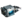

Europa
- Wpis w Kodeksie - Lodowy księżyc Jowisza zwany Europą jest domem dla miejsc katastrof statków kosmicznych biorących udział w ostatnich kampaniach wojennych. Rozproszone szczątki statku klasy Obelisk Corpus zaśmiecają śnieżny krajobraz, podczas gdy nad nimi nadal rozgrywa się bitwa. Na tej w innym wypadku pozbawionej oznak życia powierzchni, załogi Corpus pracują, aby odzyskać utracone aktywa. Wgryzają się w lodowe ściany coraz głębiej i głębiej, starają się odgrzebać i wydobyć wszelkie przedmioty z wraku, aby odrobić własne straty finansowe.
- Surowce które występują na planecie:
 Morfyt
Morfyt Rubedo
Rubedo-  Fieldron - Próbka
- Moduł Sterujący
- Występujący boss: Raptor
Fakcje i typy wrogów
 Corpus
Corpus- Technik Corpus
- Załogant
- Elitarny Załogant
- Załogant z Elektropałką
- Załogant Snajper
- MOA Hybryda
- MOA
- Sejsmiczny MOA
- Dron Miniarz
- Dron Oxium
- Dron Tarcz
- Bursa Negator
- Bursa Poganiacz
- Bursa Izolator
 Grineer
Grineer- Rzeźnik
- Skorpion
- Balista
- Elitarny Szturmowiec
- Obdzieracz
- Szturmowiec
- Poszukiwacz
- Tarczownik
- Żołnierz
- Dowódca
- Ciężkozbrojna
- Siekacz
 Plaga
Plaga- Taran
- Skoczek
- Wybuchowy Biegacz
- Pełzacz
- Trujący Pełzacz
- Zakłócający Starożytny
- Toksyczny Starożytny >